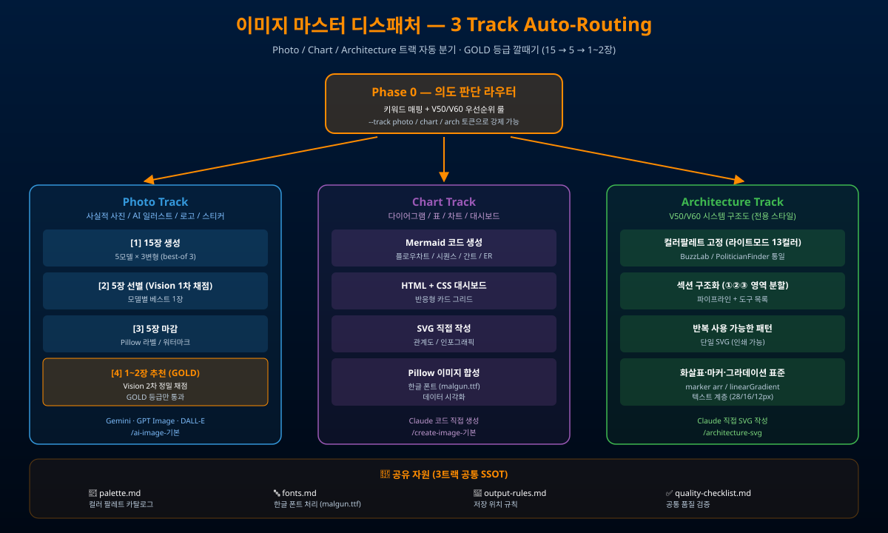

/image-기본에서 의도를 판단해 적합한 도구·모델로 분기/ai-image-기본, /create-image-기본, /architecture-svg)을 그대로 보존하면서 위에 얇은 라우터를 얹은 구조다.

/ai-image-기본/create-image-기본/architecture-svg5모델 × 3변형 best-of 3
Vision 1차 채점 → 모델별 베스트
Pillow 라벨 · 워터마크
Vision 2차 정밀 채점 → GOLD만 통과
| 모드 | 호출 | 인지 부하 | 비용 |
|---|---|---|---|
| 빠른 시안 (기본) | 기본 호출 | 5장 검토 | 1× |
| 품질 우선 | --best-of 3 | 1~2장 검토 | 약 3~4× |
| 최저 비용 | --best-of 3 --no-final-eval | 5장 검토 | 약 2× |
| 키워드 패턴 | 라우팅 |
|---|---|
| "사진 · 일러스트 · 로고 · 스티커 · 사실적 · 마스킹 · 투명배경 · 멀티레퍼런스" | Photo Track |
| "다이어그램 · 표 · 차트 · 대시보드 · 시퀀스 · 간트 · ER · 플로우 · 조직표" | Chart Track |
| "V50 · V60 · 아키텍처 구조도 · 전체구조도" | Architecture Track |
강제 라우팅: --track photo / --track chart / --track arch 또는 [photo] / [chart] / [arch] 토큰
| 명령 | 자동 라우팅 |
|---|---|
/image-기본 "골든아워 부산 북구갑 거리 사진" | Photo Track |
/image-기본 "BPI 산출 시퀀스 다이어그램" | Chart Track |
/image-기본 "V60 시스템 구조도, 섹션 ①파이프라인 ②도구목록" | Architecture Track |
| palette.md | 컬러 팔레트 카탈로그 — BuzzLab/POLFAI/V50 라이트·다크 통합 |
| fonts.md | 한글 폰트 처리 규칙 (malgun.ttf, 이모지 주의사항) |
| output-rules.md | 저장 위치 규칙 (Desktop/, G:/내 드라이브/) |
| quality-checklist.md | 공통 품질 검증 체크리스트 |
| #26 유튜브 영상 제작 | S3 자산 제작 — Multi-Source Best-of-N 원리의 출처 |
| #22 SVG 아키텍처 → 스킬화 | Architecture Track과 직접 연결 |
| #42 포크레인·트랙터 | "한 도구 통일" X → "도구별 분업" 패러다임 |